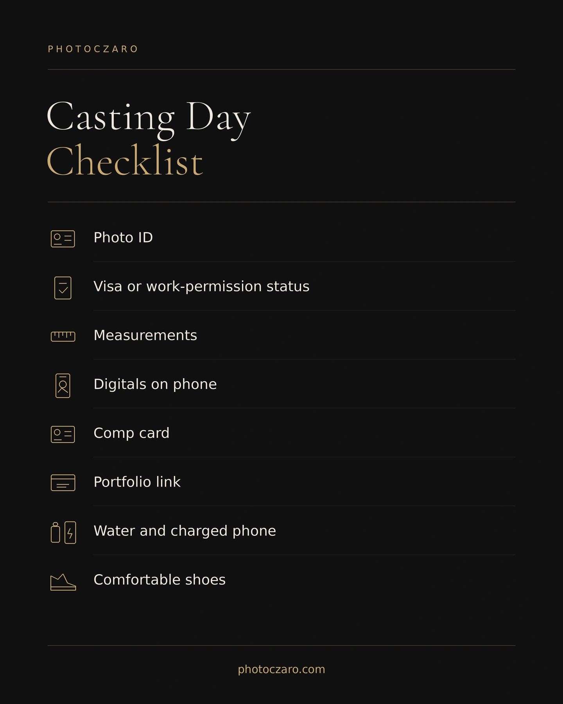
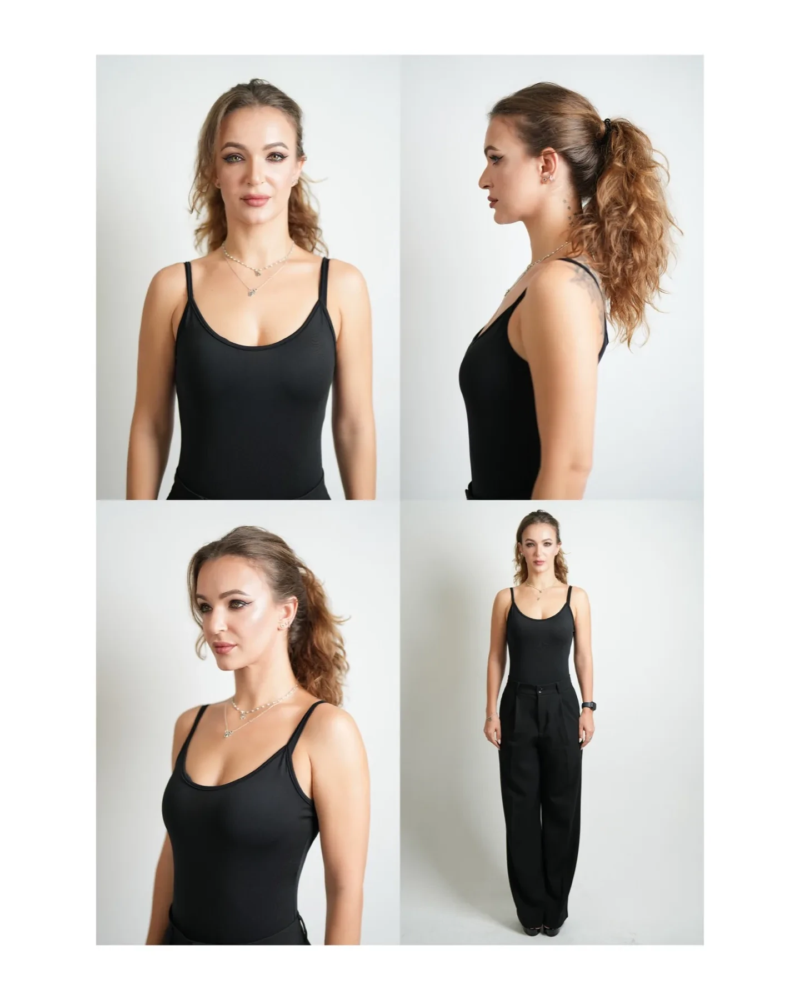

A model casting in Dubai is a short, in-person meeting where an agency or client sees you for real, takes fresh digitals and decides whether to shortlist you, keep you on file or move on. Most people lose it before they walk in: out-of-date photos, the wrong outfit, or a casting that was never real in the first place.
This guide covers how to prepare for a model casting in Dubai: how to check it is genuine, what to bring and wear, what happens in the room, how to take the digitals agencies ask for, and what to do afterwards. It is written for first-timers, but it works as a checklist if you have done a few.
Check the casting is real before you go. Bring a valid ID, your visa or work-permission status, accurate measurements and current digitals on your phone. Wear something simple and fitted, with natural hair and little or no makeup. Expect a check-in, digitals, measurements, a short walk or pose and a brief conversation. Afterwards, say thanks, keep your photos current and do not chase.
What is a model casting, and how is it different from a go-see?
The words get used loosely, so it helps to know what you have actually been invited to. When you receive an invitation, ask which one it is.
- Casting: you are being considered for a specific job, campaign or show. The client or casting director usually has a brief.
- Go-see: a meeting where you introduce yourself to an agency or client, often without a specific job attached. The aim is to be seen and kept on file.
- Open call: a scheduled event where an agency meets many new faces in one sitting, often without a fixed appointment time.
- Callback: a second meeting after a first one, usually because you have been shortlisted.
Preparation is almost identical for all four. What changes is how specific the brief is, so always read it twice and follow it over any general advice, including this guide.
Before you go: check the casting is real
The most important preparation happens before you leave the house. Fake castings are common enough in the UAE that I wrote a full guide to them, how to spot a fake casting or agency before you pay. Four checks take a few minutes and catch most problems:
- Find the company yourself. Search for the agency or client, open its own website and confirm the contact details there, not the ones in the message you received.
- Make sure nobody asks for money. No registration fee, no profile activation fee, no paid photoshoot as a condition of attending. If money comes up, stop.
- Get the details in writing. Who is casting, for what, where, when, and who you should ask for on arrival. A real client answers these questions without fuss.
- Plan your safety. Tell someone exactly where you are going and with whom, and bring a friend to a first meeting if you can. Do not hand over your passport or bank details at a casting.
If any of these feels off, you can always decline. A genuine agency will not be offended that you checked.
What to bring
Keep it light. Agencies want to see you, not your luggage. Everything below should fit in a small bag.
- A valid photo ID. Many venues and buildings in Dubai check ID at reception.
- Your visa or work-permission status. Agencies ask for it. For example, Diva Dubai asks for your UAE mobile number and visa status when you register. If you are not sure what you are allowed to do, read the honest guide to modeling in the UAE first.
- Accurate, current measurements. Height, bust or chest, waist, hips, shoe size, hair and eye colour. Measure yourself the week before. Guessing from memory causes problems when someone checks.
- Your digitals on your phone. Keep them in one album you can open instantly, not buried in your camera roll.
- A comp card, if you have one. A few printed copies are enough. If you do not have one yet, see what to include on a model comp card.
- A link to your portfolio. A PDF or web page you can send on the spot.
- The basics. A charged phone, a power bank, water, a hair tie or clip, and shoes you can walk in comfortably.


A casting-day checklist, and a standard set of digitals: portrait, side profile, three-quarter and full length. Photographed by Photoczaro.
What to wear to a model casting
The goal is to let the person looking at you see your frame, your proportions and your face without distraction. That is why simple wins.
- Fitted, simple clothing. Plain black, white or a neutral tone. A fitted top and slim trousers, or a simple fitted dress. Avoid large logos, busy prints and oversized layers that hide your shape.
- Natural hair and skin. Clean, styled lightly or not at all. Little or no makeup. Casting teams want to see how you really look.
- Clothes that survive Dubai. Indoor air conditioning and outdoor heat swing hard. Allow time to arrive cool and composed, and avoid fabrics that crease or show sweat.
- Follow the brief. If the casting asks for a specific item, such as swimwear for a swimwear job, bring it exactly as requested. If it says nothing, keep it simple.
For a fuller look at colour, fit and fabric, see what to wear for a photoshoot in Dubai. The same logic applies.
What actually happens in the room
Formats vary by agency and client, but most castings follow the same shape. Knowing it in advance makes the day feel routine rather than stressful.
| Step | What happens | What to do |
|---|---|---|
| 1. Arrive and check in | You give your name, who you are here to see, and sometimes a form with your measurements and contact details | Arrive 10 to 15 minutes early, be polite to everyone, keep your phone away |
| 2. Digitals | A quick set of unretouched photos: portrait, full length and side profile | Stand naturally, face the camera, follow instructions without over-posing |
| 3. Measurements | They may measure you or check the figures you wrote down | Be honest. Accurate numbers build trust faster than flattering ones |
| 4. Walk or pose | For some jobs, a short walk, a turn, a simple pose or a line to read | Do exactly what is asked, calmly, then stop |
| 5. A short conversation | Where you are based, your availability, any experience, what you are looking for | Answer clearly and briefly. Do not oversell, and do not speak badly about other agencies |
| 6. Leave | You are thanked and told whether and when to expect to hear back | Say thank you, leave a comp card if you have one, and go |
The whole thing is often brief. That is normal and it is not a bad sign. People who see many faces in a day decide quickly, so the first impression is made by your photos, your punctuality and how easy you are to work with.
How to take the digitals agencies ask for
Digitals, also called polaroids, are simple, unretouched photos that show you as you are today. Each agency states what it wants, and the instructions differ, so follow the target agency's current page exactly. Three examples:
- CM Models asks for natural photos you can take with a phone: portrait, full body and side, in daylight in front of a simple light background, with no makeup or styling, and not older than three months.
- Bareface asks applicants to upload four photos: headshots against a white wall, plus full-body and half-body shots.
- Diva Dubai asks for a close-up headshot with no filters and a selection of recent photos that includes a full-length one.
The pattern is consistent. Daylight, plain background, no filters, no heavy styling and recent. For the full breakdown of digitals versus a portfolio, read model digitals vs model portfolio, and see why model photos get ignored in Dubai if your current set has not been getting replies.
Seven mistakes that cost people the casting
- Not reading the brief. Wrong outfit, wrong item, wrong time. It is the most common and the easiest to avoid.
- Old or filtered photos. If you walk in looking different from your pictures, the meeting starts with doubt.
- Heavy makeup and styling. It hides the thing the casting team came to see.
- Being late. In Dubai, allow for traffic, parking and finding the right building and floor. Aim to arrive early rather than on time.
- Inaccurate measurements. They are checked, and mismatches look careless at best.
- Performing instead of being natural. Over-posing in digitals and in the room rarely helps. Calm and direct does.
- Agreeing to things on the spot. Do not sign, pay or share documents at a first meeting. Take any contract away, read it and check it. The honest guide covers contracts, money and safety.
What to do after the casting
Most castings do not end in a booking, and that is normal. What matters is that you leave a good impression and keep your material ready for the next one.
- Say thanks once. A short message to the contact person is enough. Do not follow up repeatedly.
- Keep a simple record. Note who you met, when, and for what, so you do not send the same photos to the same people twice.
- Refresh your digitals when your look changes. New haircut, new colour, noticeable weight change. Do not wait for someone to ask.
- Treat silence as information, not a verdict. Many castings are for one job that goes to someone else. Being kept on file still has value.
If you are new to Dubai or visiting for the season
Visiting models face extra risks, because they do not yet know the city, the agencies or the rules. Before you accept any paid work, check your visa and work-permission position, and verify every offer through the company's own channels. The honest guide to modeling in the UAE sets out what to check, and the guide to starting with no experience explains how to begin without paying for anything you should not.
A casting is a short conversation backed by good, honest photos and a calm arrival. If those two things are in place, the rest tends to take care of itself. If your digitals are the weak point, that is the one part that takes real work, and it is the part I can help with.
Frequently Asked Questions
This article reflects my own experience photographing digitals and portfolios for models in Dubai, plus the public application guidance of CM Models, Bareface and Diva Dubai, checked in November 2026. Agency requirements change, so treat the agency's current page as the final word.
Work with me
Based in Dubai. If you have a casting coming up and your digitals are old, filtered or inconsistent, send me what you have and the casting date. I will tell you honestly whether a short digitals session makes sense, or whether you already have what you need.
Have your digitals ready? UAE residents aged 18 and over can apply to the Photoczaro Models roster for free.